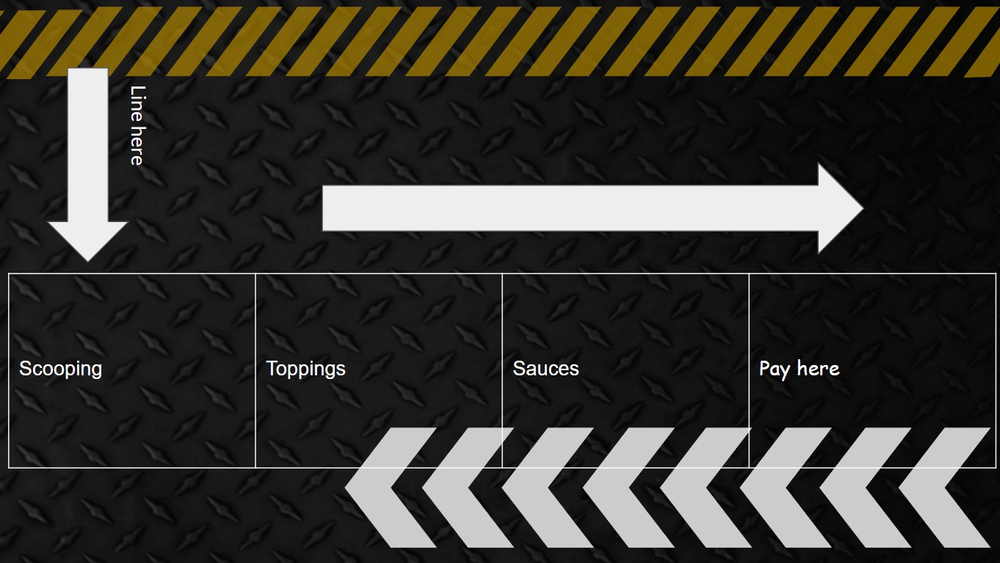

How the stall works

We will take precautions in making the edible cookie dough by heat treating the flour to get rid of the bacteria. We will wash our hands before and whilst making it so we don't spread any germs. There's no raw food included in the cookie dough so it is safe to eat. We will also make it the day before or on market day in the morning so it doesn't go bad. When selling the food we will all be wearing gloves all the time to ensure no germs are spread, there will be no mixing of the different toppings. There will each be a different spoon for each topping and different people will be helping with the different toppings in case people have allergies so they don’t touch